HDF5 I/O Performance¶
Analysis and visualization of mass spectrometry imaging (MSI) data is often based on selected subsets of the data, e.g., single or multiple spectra or m/z data slices. It is, therefore, crucial that we are able to quickly access select subsets of the data. In the context of web-based applications —such as the OpenMSI Viewer— this is particularly crucial in order to enable interactive data analysis and to provide a satisfactory user experience. The tests described here focus on characterizing and optimizing the performance of data access operations performed in serial on OMSI HDF5 files. While we here focus on the performance of serial data accesses, the optimizations described here are fundamental to optimizing parallel data access as well.
In the following, we first identify a select set of target compute platforms (Section Test Platforms) and define a set of representative use cases in order to evaluate the performance of different data layouts (Section Test Cases). We then discuss the basic layout of the MSI data (Section Dataset Layout) and establish the baseline performance using the default contiguous data layout (Section Baseline Performance). Afterwards, we explore further optimization of the data layout using HDF5’s data chunking (Section Chunking: Part 1) and data compression (Section Compression) capabilities. We conclude this study with a discussion of lessons-learned in Section Discussion.
Test Platforms¶
All tests were performed on two main compute systems: i) login node of hopper.nersc.gov (short hopper) and ii) portal-auth.nersc.gov (short portal). On hopper we utilized the LUSTRE-based /scratch file system, as well as the global GPFS-based /project file system. On portal we can only access the /project file system. We chose these systems because: i) hopper is our candidate system for performing large-scale parallel analysis of MSI data and ii) portal is our target system for providing web-based access to MSI data.
hopper.nersc.gov¶
The hopper system has 12 login nodes with 4 quad-core AMD 2.4 GHz Opteron 8378 processors (16 cores total) each on 8 of the login nodes and 4 8-core AMD 2.0 GHz Opteron 6128 processors (32 cores total) each on 4 of the login nodes. Each login node has 128 GB of memory. The login nodes are external to the main Cray XE6 system. All tests were performed using hopper login nodes.
Scratch: There are two Lustre file systems on hopper —mounted as /scratch and /scratch2 (in the following we use /scratch2)— with the following setup:
- 13 LSI 7900 disk controllers (Each disk controller is served by 2 I/O Object Storage Servers (OSSs))
- Each OSS host 6 OSTs (Object Storage Target) (simplified speaking a software abstraction of a physical disk)
- Fiber Channel 8 connectivity from OSSs to the LSI disk controllers
- Infiniband connects the Lustre router nodes in the 3d torus through a QDR switch to the OSSs
- In total each
/scratchfile system has 156 OSTs which is the lowest layer with which users need to interact. When a file is created in/scratchit is by default “striped” or split across two different OSTs. Striping is a technique to increase I/O performance. Instead of writing to a single disk, striping to two disks allows the user to potentially double read and write bandwidth. In the following experiments we use the default stripping settings but depending on file size, larger stripe settings may be advantageous. Using the/scratchfile system for temporary storage of MSI data files can be advantageous when performing complex I/O intensive analysis.
Global /project : This is a large (1606 TB), permanent, medium-performance GPFS-based file system. We utilized the /project file system in the context of the OpenMSI project for permanent storage of MSI data.
portal-auth.nersc.gov¶
The portal system is used at NERSC for any data services that require public access from the Internet (such as Science Gateways) and as such also hosts the OpenMSI webpage and science gateway. The system consists of 2 quad-core AMD Opteron 2378 processors (8 cores total) with 24GB of memory. This system has only access to the /project file system.
Test Cases¶
In order to evaluate the performance of different data layouts, we designed a set of test-cases modeling the most common data access patterns in the analysis of MSI data. One particular focus of this study is to optimize the performance of the file format for web-based access to the data required for OpenMSI’s online data viewing, analysis and exploration functionality. In this context it is most important that we are able to quickly access select subsets of the data, in particular, image slices, spectra or subcubes of the data. These type of data access patterns, however, are very common also for a large range of data analyses, e.g., peak finding on individual spectra, data clustering and many others. In contrast to analysis performed with direct access to the compute system, the abilities for data caching are typically much more limited in a web-based setting due to the fact that: i) http accesses are stateless, i.e., a file is typically reopend for each incoming request and closed again afterwards and ii) access patterns to the data are much more irregular with multiple users working with different datasets and/or different subsets of the data at the same time. While the median performance for repeated data selection operations on the same open file is often very important for data analysis, in a web-based setting the maximum time for the first access to the data is often much more important. In the following we report for each selection test case the median time (indicating the sustained performance on an open file) and the maximum time (indicating the selection performance after the first opening of the file). We usually repeat each selection test case 50 times for each data layout using randomized selection parameters.
Case 1: m/z Slice Selection¶
This test case models the selection of a series of z-slices of the data (i.e., slices in a mass range), and extracts a set of consecutive, full images of the data. This type of operation is required in the OpenMSI viewer when updating channels in the image viewer itself. It is also a common operation in many other analyses, e.g, when analyzing the distribution for a particular peak across the image.
- Randomized Selection Parameters:
zmin - Dependent Selection Parameters:
zmax = zmin+25 - Extracted Dataset: 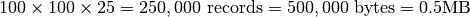
Case 2: Spectra Selection¶
This test case models the selection of a 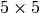 set of full spectra. In the OpenMSI viewer, access to single and multiple neighboring spectra is required when updating the spectrum plot’s. This is also a typical operation for many analyses that operate on a per spectrum basis, e.g., peak finding for a single spectrum.
- Randomized Selection Parameters:
xmin,ymin - Dependent Selection Parameters:
xmax = xmin+5,ymax = ymin+5 - Extracted Dataset: 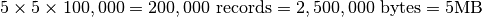
Case 3: 3D Subcube Selection¶
This selection models the general access to consecutive sub-pieces of the data, e.g., when accessing data from a particular spatial region of the data related to a particular set of m/z data values. This type of operation is required, e.g., when analyzing the data of a cluster of pixels with a particular set of peaks of interest.
- Randomized Selection Parameters:
xmin,ymin,zmin - Dependent Selection Parameters:
xmax = xmin+5,ymax = ymin+5,zmax = zmin+1000 - Extracted Dataset: 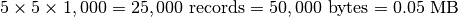
Case 4: Data Write¶
As described above, the aim of this study is to optimize the performance of selective data read operations (termed hyperslap selections in HDF5). In contrast to the data read, data write is a one-time cost during the file conversion step and is, therefore, less critical to the operation of OpenMSI. A reduced write performance may, therefore, be acceptable in lieu of an increase in read performance as long as an acceptable write performance is maintained. During selection performance tests, the data write is repeated only 3 times for each data layout (i.e.,once for each of the three selection test cases). For selected cases (indicated in the plot titles) we ran dedicated data write tests with 10 repeats. We here typically report the average times for data write.
Case 5: File Size¶
The size of data files is important to this study as different file layouts may have different space requirements (e.g., due to padding and additional metadata). While reduction of the size of data files is not the main objective of this work, it is important to avoid unnecessary overheads in file size and, hence, storage cost. The size of files reported in this study have been determined using the Python command os.stat( filename ).st_size.
Test Data¶
For this study we use a test dataset. The dataset is stored as a 3D array of UInt (16bit) data values using the OMSI HDF5 format described in Chapter OMSI Data Format . Data write and hyperslap performance are independent of the data values being written/read, so to test the baseline write-performance, we simply assign to each data element the index of the corresponding data chunk. For test cases that utilize data compression, we use a donor MSI data file to fill the file with realistic data. We may replicate data from the donor file in case that the testfile is larger than the donor file. In case that a donor file is used, we read the donor data into memory prior to writing of the test dataset. For each test case (i.e., data layout + selection case) we generate a new test data file to reduce/eliminate effects of data caching. The newly generated file is then opened and the current selection (i.e., hyperslap selection) is repeated 50 times using randomized selection parameters.
Raw data files used in this study are:
Dataset A: (default donor file)
- Name: 11042008_NIMS.h5
- Dimensions: 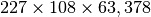
- Raw Data Size:
- File Size: (including results from global peak finding and nmf)
Dataset B:
- Name: 2012_0403_KBL_platename.h5 (DoubleV)
- Dimensions: 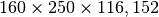
- Raw Data Size:
- File Size: 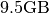 (including results from global peak finding and nmf)
Dataset Layout¶
A single (2D) MSI dataset defines a 3D data volume with the spatial coordinates  ,
,  and the 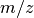 (mass) as third dimension (
and the 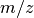 (mass) as third dimension ( ). In raw block-of-uint format (e.g, in the IMG format) the data is often stored in a 1D linearized fashion: 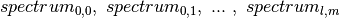. While such a layout is well-suited for accessing single full spectra, access to single image z-slices requires
). In raw block-of-uint format (e.g, in the IMG format) the data is often stored in a 1D linearized fashion: 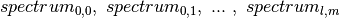. While such a layout is well-suited for accessing single full spectra, access to single image z-slices requires  seek operations and traversal of the complete dataset (with l, m being the number of pixel in x,y ,respectively). Selection of spectra and z-slices of the data are orthogonal selection operations, i.e., a 1D data layout can always just optimize one of the two access operations but not both. Similarly, a 2D data layout can be defined to enable easy access to full spectra as well as full z-slices, but does not easily support to optimize access to 3D subsets of the data. We, therefore, store MSI data as a 3D array in HDF5 to: i) be be able to optimize and find a good performance compromise for selection of spectra, z-slices as well as 3D subcubes of the data and ii) because the 3D array reflects the true dimensionally of the data.
seek operations and traversal of the complete dataset (with l, m being the number of pixel in x,y ,respectively). Selection of spectra and z-slices of the data are orthogonal selection operations, i.e., a 1D data layout can always just optimize one of the two access operations but not both. Similarly, a 2D data layout can be defined to enable easy access to full spectra as well as full z-slices, but does not easily support to optimize access to 3D subsets of the data. We, therefore, store MSI data as a 3D array in HDF5 to: i) be be able to optimize and find a good performance compromise for selection of spectra, z-slices as well as 3D subcubes of the data and ii) because the 3D array reflects the true dimensionally of the data.
HDF5 can represent array datasets with as many as 32 dimensions. However, in the file the data is linearized in order to store it as part of the 1-dimensional stream of data that is the low-level file. The data layout determines in which way the multidimensional dataset is mapped to the serial file. The simplest way to accomplish this is to flatten the dataset (similar to how arrays are stored in memory) and to store the entire dataset into a monolithic block on disk. We here use this, so-called, contiguous layout as baseline for our performance tests (see Section Baseline Performance).
Chunking provides an alternative to the contiguous layout. In contrast to storing the data in a single block in the HDF5 file, using chunking the data is split into multiple chunks. Each chunk of a dataset is allocated separately and stored at independent locations throughout the HDF5 file. The chunks of a dataset can then be read/written independently, enabling independent parallel I/O and potentially improving performance when operating on a subset of the dataset. Data chunks may be stored in arbitrary order and position within the HDF5 file. HDF5 uses a B-tree to map a chunks N-dimensional address to a physical file addresses. The size of the B-tree directly depends on the number of chunks allocated for a dataset. The more chunks are allocated for a dataset: i) the larger overhead for traversal of the B-tree, ii) the higher the potential contention for the metadata cache, and iii) the larger the number of I/O operations. An introduction to data chunking in HDF5 is provided at http://www.hdfgroup.org/HDF5/doc/Advanced/Chunking/ . The performance of different chunking strategies for storing MSI data is evaluated in Section Chunking: Part 1.
Use of chunking also enables the use of HDF5 I/O filters. We here investigate the use of compression filters. I/O filters are applied in HDF5 to each chunk individually, and entire chunks are processed at once. I/O filters enabled for a dataset are executed every time a chunk is loaded or flushed to disk. Choosing proper settings for the chunking (and chunk cache) are, therefore, critical for the performance of filtered datasets. The potential use of gzip compression for improving file size and hyperslap selection of MSI datasets is evaluated in Section Compression.
Chunking and HDF5 I/O filters (e.g., data compression) are implemented transparently in HDF5, i.e, the API functions for reading/writing chunked/compressed datasets are the same ones used to read/write datasets with a uncompressed, contiguous layout. The layout (i.e., chunking scheme and compression options) is defined via a single function call to set up the layout on a property list before the dataset is created.
Baseline Performance¶
The goal of this section is to establish a baseline for the performance of the basic HDF5 contiguous data layout (i.e., without chunking). The baseline performance for the three selection test cases are shown in Figures i) Baseline performance for the slice selection test case, ii) Baseline performance for the spectra selection test case, and iii) Baseline performance for the subcube selection test. The bar plots show the minimum (blue), median (blue+red), average (blue+red+green), and maximum (blue+red+green+lilac) times for retrieving the selected data. We observe that hopper using /scratch provides much better performance for selection of spectra and 3D subcubes of the data. For the z-slice selection we observe that hopper achieves good median and average selection performance, whereas the performance of the z-slice selection on portal is generally poor. In all cases, we observe poor worst-case (maximum) times for the z-slice selection case.
For serial data write performance we observe that /project provides better write performance. However, for parallel write operations, the LUSTRE-based /scratch file system is expected to outperform /project.

Baseline performance for the slice selection test case

Baseline performance for the spectra selection test case
{kind=link}
Baseline performance for the subcube selection test

Baseline performance for data write
Chunking: Part 1¶
Use of a chunked data layout has many potential advantages. In particular, use of chunking enables independent data I/O operations on individual chunks of the data so that chunking: i) can reduce the amount of data that needs to be read during hyperslab selections, ii) enables parallel independent I/O on a single file, and iii) enables the use of data compression (discussed later in Section Compression). The goal of this section is to evaluate the use of chunking to improve I/O performance. Due to the amount of additional metadata and overhead associated with finding chunks, one should avoid the use of too small chunks. At the same time, use of too large chunks should be avoided, because the entire chunk must be read from disk (and decompressed) before performing any operations. When operating on small subsets of the data (and if the cache is too small to hold the chunk), the use of too large chunks can result in large performance penalties. In addition, if the chunk is too large to be held in memory, the operating system may have to page memory to disk, slowing down the entire system. [1]
Choosing a good chunking strategy for MSI data is complicated because: i) the data has a very unconventional shape, with the m/z dimension being three to four orders of magnitude larger than the spatial x/y dimensions and ii) orthogonal data access operations (access to spectra vs. z-slices) are required with good first-time-access performance.
To account for these properties we use odd chunk sizes of with . Finding a good compromise for choosing a good chunking is challenging. Larger chunk sizes  in x, y are expected to improve z-slice selections but also increase the overhead for spectra selections. Similarly, large chunk sizes
in x, y are expected to improve z-slice selections but also increase the overhead for spectra selections. Similarly, large chunk sizes  in z (m/z) are expected to improve spectra selections while increasing the overhead for z-slice selections. The goal of this first set of experiments is to find a chunking that provides a good compromise in performance for all three selection test cases.
in z (m/z) are expected to improve spectra selections while increasing the overhead for z-slice selections. The goal of this first set of experiments is to find a chunking that provides a good compromise in performance for all three selection test cases.
In the following we compare the performance of a range of different chunking strategies of the form with 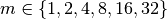 and 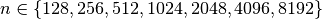 using hopper using /scratch. We first evaluate the effects of the different data layouts on file size (Section File Size) and write performance (Section Data Write). We then compare the performance for performing the three selection test cases (Section Selection Performance). We conclude this chunked layout study with an evaluation of the overall performance of the different chunked data layouts to identify the best-performing data layouts (Section Selection Performance)
Footnotes
| [1] | See also http://www.hdfgroup.org/HDF5/doc/Advanced/Chunking/ |
File Size¶
The use of chunking effects the size of data files in two main ways. First, storing the additional metadata required for chunking —such as the B-tree used for indexing of data chunks— increases file size. Second, the use of chunking may result in allocation of additional empty data (padding) in case that the chunks do not align with the data. This can result in substantial data overheads. A simple example illustrates this problem. When storing a simple 1D dataset with 101 elements using a chunk size of 100, then we need to allocated two chunks, one chunk to store the first 100 elements and a second chunk to store the last element. In this case we allocated space for 200 elements in order to store 101 elements, nearly twice the amount of storage needed for the raw data. For multi-dimensional data arrays –here 3D– the storage overheads due to padding can increase even faster. It is, therefore, important that we consider the potential storage overhead when evaluating the use of data chunking.
{kind=link}
File sizes using different chunking strategies
Figure File sizes using different chunking strategies illustrates the effects of chunking on the size of data files. The baseline curve indicates the file size using a contiguous data layout. We observe that the file with a chunking of 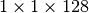 is much larger than the other files with a 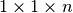 chunked layout. No padding is applied in the spatial dimensions , . When using a chunk size of 128, 782 chunks are required per spectrum, resulting in a total of 7,820,000 chunks. Due to padding in the dimension, 96 slices remain empty. However, this accounts for only  . In comparison, the dataset is much smaller while requiring a much larger padding of 352 slices (i.e, ). The reason for the larger file size for the chunking illustrates the large overhead for storing the metadata required for the large number of chunks.
. In comparison, the dataset is much smaller while requiring a much larger padding of 352 slices (i.e, ). The reason for the larger file size for the chunking illustrates the large overhead for storing the metadata required for the large number of chunks.
We also observe that the file size increases significantly when using chunk sizes in x, y of or larger. This behavior is due to the padding required in the spatial dimensions. For example, when using a chunking of 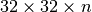 we requires 4 chunks in the and dimension (i.e., 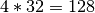 elements). This means, in order to store the test dataset, we allocate space for at least 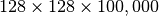 records (additional padding may be required in the dimension). This means that we allocate at least an additional amount of space of 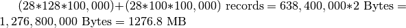. This example illustrates that a bad choice for the chunking can result in substantially larger data files. Since in the case of MSI data, the , dimensions of the data are much smaller than the (, mass) dimension, it is important that we keep the padding required in and as small as possible, whereas padding in the dimension typically has a much smaller effect on the size of the data.
Data Write¶
Traditionally, MSI data is often written one-spectrum-at-a-time. Figure Write performance using one-spectrum-at-a-time I/O using different chunk sizes (hopper using /scratch) illustrates the write performance for the different data layouts using a one-spectrum-at-a-time write strategy. It is not surprising that we observes a significant decrease in performance with increasing chunk sizes in the x and y dimensions, as each data chunk is modified times. For chunkings of with 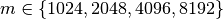 the write performance improves possibly due to higher HDF5 chunk-cache hit rates. The write performance data points for data layouts with a chunking of 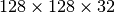 , 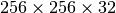 , and 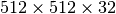 are missing as we terminated the tests due to the very poor one-spectrum-at-a-time write performance in those cases.
{kind=link}
Write performance using one-spectrum-at-a-time I/O using different chunk sizes (hopper using /scratch)
{kind=link}
Write performance using different data write strategies and chunk sizes (hopper using /project)
To achieve optimal data write performance, it is important that we reduce the number of times each chunk is modified. Figure Write performance using different data write strategies and chunk sizes (hopper using /project) compares the write performance for 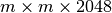 chunked data layout using a one-spectrum-at-a-time,  -spectra-at-a-time, and chunk-at-a-time data write strategy. Using the latter two strategies ensures that each chunk is modified only once. We observe that the chunk-at-a-time write strategy quickly outperforms the other write strategies as the chunk size increases (and the total number of chunks decreases). It is not surprising that the contiguous baseline layout outperforms the chunked layouts in a serial setting. However, the chunked layouts efficiently support parallel data write operations. Using a chunk-at-a-time write strategy, independent parallel tasks can be utilized to write the different chunks.
-spectra-at-a-time, and chunk-at-a-time data write strategy. Using the latter two strategies ensures that each chunk is modified only once. We observe that the chunk-at-a-time write strategy quickly outperforms the other write strategies as the chunk size increases (and the total number of chunks decreases). It is not surprising that the contiguous baseline layout outperforms the chunked layouts in a serial setting. However, the chunked layouts efficiently support parallel data write operations. Using a chunk-at-a-time write strategy, independent parallel tasks can be utilized to write the different chunks.
Selection Performance¶
In this section we evaluate the selection performance of the different chunked data layouts for the three selection test cases: i) selection of a random set of 25 consecutive z-slices, ii) selection of a random set of full spectra, and iii) selection of a random 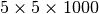 subcube of the data. Figure Performance results for z-slice selection using varying chunk sizes (hopper using /scratch) [2] shows the results for the z-slice hyperslap selection. We observe that data layouts with a chunking of with 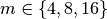 and 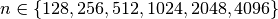 show the best z-slice selection performance. For the mentioned chunking strategies we observe in general best performance for larger values in and smaller values of . This behavior is likely due to the reduced amount of data and number of chunks that need to be loaded to fulfill the selection of complete slices in .
{kind=link}
Performance results for z-slice selection using varying chunk sizes (hopper using /scratch)

Performance results for spectra selection using varying chunk sizes (hopper using /scratch)
For the spectra selections (see Figure Performance results for spectra selection using varying chunk sizes (hopper using /scratch)) we observe in most cases a decrease in the median performance compared to the baseline contiguous data layout. This behavior is likely due to the fact that the data is flattened in a z-column order in the contiguous layout, so that a full spectrum can be read via a single seek and contiguous read operation. In contrast, using a chunked data layout requires for the test dataset, loading 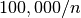 chunks. However, we observe that data layouts with a chunk size in z of 1024 and larger, still provide good performance for the selection of full spectra. In this case, small chunk sizes in x, y of 2 or 4, work well for the test case of loading a set of spectra, as the number of chunks that need to be loaded remains constant. For data layouts with a x,y chunking of , the spectra selection can fit into a single x,y chunk, however, it is still likely that the selection crosses multiple chunk boarders, requiring the load of a large number of chunks. For x, y chunk sizes of 16 or 32, the spectra selection is more likely to fit in a single chunk in x,y, explaining the better performance of those data layouts.

Performance results for 3D subcube selection using varying chunk sizes (hopper using /scratch)
Figure Performance results for 3D subcube selection using varying chunk sizes (hopper using /scratch) [2] summarizes the results for the selection of a data subcube. We observe that using chunking generally improves the performance of the selection. In particular, using chunking decreases the time for initial data access compared to the baseline contiguous data layout.
When comparing the selection performance plots, we observe that — even though the amount of data that is retrieved is only 0.5MB in z-slice selection case compared to 5MB in the spectra selection case— the performance for z-slice selection case is generally lower than for the spectra selection case. The reason for this behavior is that while the z-slice selection returns less data, the number of I/O (seek) operations required and the amount of data that needs to be loaded to fulfill the selection is larger. E.g, using a chunking of 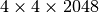 each chunk requires 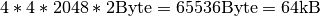. To retrieve a set of spectra, HDF5 needs to load , whereas in order retrieve 25 z-slices (without crossing a z-chunk boundary), HDF5 needs to load 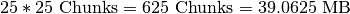, i.e, more than three times the data (and that even though the  x,y chunking does not align well with the spectra selection). Similary, in the contiguous data layout, we can load a single spectrum using a single seek and contiguous read operation, whereas in order to load complete a z-slice we requires (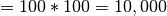 for the test data) seek and load operations.
x,y chunking does not align well with the spectra selection). Similary, in the contiguous data layout, we can load a single spectrum using a single seek and contiguous read operation, whereas in order to load complete a z-slice we requires (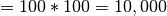 for the test data) seek and load operations.
Footnotes
| [2] | (1, 2) Bars shown transparently indicate that the bars exceed the maximum value shown in the plot. The real value for those bars are indicated via additional text labels. |
Summary¶
To illustrate the overall performance of the different dataset layouts and to identify the “best” layouts, we define the following set of minimum performance criteria a data layout should fulfill:
- The median time for the z-slice selection test case should be
<0.1 s- The median time for the spectra selection test case should be
<0.05 s- The median time for the 3D subcube selection test case should be
<0.002 s- The total file size should be
< 2100 MB(limiting the overhead in the test case to a maximum of )- (We do not take the write performance results shown in Figure Write performance using one-spectrum-at-a-time I/O using different chunk sizes (hopper using /scratch) into account in the total score here as a chunk-at-a-time write strategy likely improve the write performance significantly)
Based on these criteria we can determine an overall performance score by evaluating how many of the criteria a particular data layout fulfills (with 4=best (passes all criteria) and 0=worst (does not pass any of the criteria)). We observe a cluster of 8 data layouts that satisfy the four performance conditions.
{kind=link}
Summary performance score using various different chunk sizes (hopper using /scratch)
Figure Summary performance score using various different chunk sizes (hopper using /scratch) summarizes the performance scores for the different data layouts. Bars with the maximum score of 4 are plotted opaque whereas all other bars are plotted transparently. We observe a cluster of 8 layouts with a performance score of 4. While the overall performance score used here is simple in nature, it illustrates well which data layouts achieve overall the best performance. Overall, the performance experiments indicate that the largest z chunk size for which we observe good performance in our experiments across a large range of x/y chunk sizes is 2048. We, therefore, chose a z chunk size of 2048 for further experiments.
So far our experiments have focused on hopper using the /scratch file system. In order to evaluate the performance of the permanent data storage system /project and the web-hosting system portal we performed a series of follow-up tests using a fixed z-chunking of 2048 on portal as well as on hopper using /project (more details are provided in the next section). We generally observed that the /project file system provided better serial write performance while the overall performance for selection was not as good as for /scratch. While the performance of ``hopper using /project was still acceptable, the performance (and in particular the worst-case maximum times) were poor using /portal (see, e.g, Figure Performance results for z-slice selection (portal using compression) shown later). We, therefore, next extended our evaluation to also include data compression as an option to possibly improve data I/O performance and storage requirements.
Chunking: Part 2¶
In part 1 of the chunking study we were interesting in finding chunked data layouts that provide a good compromise for all three selection use-cases. In part 2 we focus on chunked data layouts that are designed to optimize single selection operations.
Image-aligned Chunking¶
Figure Comparison of the performance of the default chunking with a chunked layout that is better-aligned with the ion-images to improve the performance the z-slice selection. shows the performance of the z-slice selection in the OpenMSI client when optimizing the chunked data layout to align with the selection of m/z images. Using an image-aligned chunking of 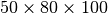, only 10 chunks containing 100 image slice need to be read in order to retrieve a single image slice, wheras, using the default chunking of , HDF5 needs to load 2,520 chunks containing 2048 image slices. The figure shows the performance we achieve in the OpenMSI client using the same data stored without compression using the two different chunked layouts. Using the default chunking it takes to compute the ion-images compared to just using the image-aligned chunking. However, not surprisingly, the performance of the orthogonal operation of selecting full spectra decreases significantly (here from 45ms to 8.1s) when optimizing the chunking to improve the selection of z-slices.
Further improvement in performance could be achieved by using a (m/z, x ,y) or (m/z, y, x) layout of the data rather than the commen (x, y, m/z). By transposing the image cube (making m/z the first dimension of the 3D cube) the data will be linearized on disk as 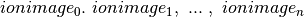 rather than . Linearizing the data in image order improves locality of data and reduces the number of seek operations required when loading ion-image. Currently, reordering of data dimensions is not yet supported by HDF5 as a transparent data layout optimization, but rather needs to be performed manually by the user. To remain ease of usability of the OpenMSI file format we, therefore, chose to use a consistent ordering of dimensions in all cases.

Comparison of the performance of the default chunking with a chunked layout that is better-aligned with the ion-images to improve the performance the z-slice selection.
Compression¶
The primary goal of data compression is to reduce the size of data by providing a more compact encoding of the data. In many cases, compression is used as means to reduce the size of data stored on disk. However, while additional compute time overheads are incurred due to the time required for compression/decompression of the data during write/read, compression may also improve the read and/or write performance, as less data needs to be transferred and/or written to disk. This is in particular the case in I/O bound systems (e.g., due to network bottlenecks etc.).
Use of data compression in HDF5 relies on the use of chunking and, hence, shares the same overheads and advantages and disadvantages. Compression is applied to each chunk of the data. The overall compression ratio achieved, therefore, inherently relies on the use of a good chunking strategy. Data compression is implemented via I/O filters in HDF5, which are applied transparently during data read and write operations, i.e., after enabling compression when generating the dataset, data read/write operations are performed using the same API calls whether the data is stored in raw or compressed form.
HDF5/h5py typically provides three main compression algorithms: i) gzip, standard HDF5 deflate compression available with most HDF5 installations, ii) szip, third-party compression algorithm optionally available with HDF5 (i.e., it may not be available on all systems), iii) LZF is a stand-alone compression filter for HDF5 available via h5py but may not be available in many other standard (non-Python) installations of HDF5. In the context of OpenMSI it is important that we are able to transfer and use data at different institutes, compute systems and using a larger range of API’s for accessing HDF5 data (e.g., matlab, HDF5 C API, h5py etc.). We, therefore, chose the standard gzip compression filter as it is typically available with most systems (in contrast to LZF and szip). The gzip filter provides and additional aggression parameter. The aggression parameter is a number between ![[0,9]](_images/math/8b3aff4e274a4a9c09266e25efa40c11d1938ef4.png) to indicate the trade-off between speed and compression ratio (zero is fastest, nine is best ratio). Unless indicated otherwise, we here generally set the
to indicate the trade-off between speed and compression ratio (zero is fastest, nine is best ratio). Unless indicated otherwise, we here generally set the aggression parameter to  for all tests to achieve a balance of compression ratio and speed.
for all tests to achieve a balance of compression ratio and speed.
Compression Ratio¶
Using a chunking of 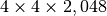, we achieve for dataset  a compression ratio of , reducing the data from 3.3GB (including MB of data for nmf and global peak-finding) to 1.2GB (while only the MSI data is stored in compressed form). Using the same setup, we achieve for dataset
a compression ratio of , reducing the data from 3.3GB (including MB of data for nmf and global peak-finding) to 1.2GB (while only the MSI data is stored in compressed form). Using the same setup, we achieve for dataset  a compression ratio of , reducing the dataset from 9.5GB to 1.5GB (again with nmf and global peak-finding results included in the file and stored uncompressed in both cases). An overview of the file sizes using compression and compression ratios achieved using the test dataset (using dataset A as donor MSI dataset) are summarized in Figure Compression ratios using different chunk sizes. The compression ratios we achieve are on the order of 2.9 to 3.8 in all cases (comparable to the compression ratio we have seen for the donor dataset ).
a compression ratio of , reducing the dataset from 9.5GB to 1.5GB (again with nmf and global peak-finding results included in the file and stored uncompressed in both cases). An overview of the file sizes using compression and compression ratios achieved using the test dataset (using dataset A as donor MSI dataset) are summarized in Figure Compression ratios using different chunk sizes. The compression ratios we achieve are on the order of 2.9 to 3.8 in all cases (comparable to the compression ratio we have seen for the donor dataset ).

Compression ratios using different chunk sizes

Compression performance on a select set of real MSI datasets.
Data Write¶
Figure Serial write performance using compression compares the write performance results with and without using compression for data layouts with a chunking of with 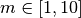. As expected, we observe a general decrease in the write performance when using compression. As mentioned earlier, when using compression it is important that we use a chunk-aligned data write strategy as the compression filter needs to be executed each time a chunk is loaded and/or modified. We, therefore, use the chunk-at-a-time write strategy when writing HDF5 datasets with compression enabled.
{kind=link}
Serial write performance using compression
Selection Performance¶
In this section we evaluate the selection performance of the different chunked data layouts (with ) for portal and hopper using /project and /scratch. For portal we observe that using compression can significantly improve the median selection time for the z-slice selection test case (see Figure Performance results for z-slice selection (portal using compression)). In particular, using compression significantly reduces and stabilizes the worst-case maximum time for selecting z-slices of the data [3] . This is especially important in the context of a web-based application, such as, OpenMSI’s online data viewer. For the other two selection test cases we observe that we can achieve similar performance for the spectra and 3D subcube selection test cases on portal with and without compression (see Figures Performance results for spectra selection (portal using compression) and Performance results for 3D subcube selection (portal using compression))
The selection performance results for hopper using /project and /scratch and with and without using compression are shown in Figures: i) Performance results for z-slice selection (hopper using compression) , ii) Performance results for spectra selection (hopper using compression), and Performance results for subcube selection (hopper using compression). As baseline we use the performance of the contiguous data layout on hopper using /project. In contrast to portal, we observe on hopper a general decrease (of up to 1 order of magnitude) in the selection performance when using compression compared to when storing the data in raw, uncompressed form. Compared to the baseline contiguous data layout we, however, still observe an improvement in many cases even when using compression. Generally it appears that the use of compression may have stronger negative effect on the selection performance when operating on the /scratch filesystem then when using /project [4].
Footnotes
| [3] | Author comment: Depending on when the test were run we have seen significant (approximately 1 order of magnitude) differences in the median selection times on portal, however, the maximum appeared to not improve between different reruns of the experiments. Using compression, the results on portal have been much more stable and, in particular, the maximum times were much better. This indicates that: i) system load, on a highly utilized system like portal, has a significant impact on the performance and ii) compression can significantly improve performance the selection performance on I/O bound systems and stabilized the performance results. |
| [4] | Author comment: Note, /scratch is a parallel, LUSTRE-based file system, whereas /project is based on GPFS. Also hopper may have a higher bandwidth connection to the /scratch file system than /project. Overall, accesses to /project is likely to be more I/O bound than access to /scratch. |

Performance results for z-slice selection (portal using compression)

Performance results for spectra selection (portal using compression)

Performance results for 3D subcube selection (portal using compression)

Performance results for z-slice selection (hopper using compression)
{kind=link}
Performance results for spectra selection (hopper using compression)
{kind=link}
Performance results for subcube selection (hopper using compression)
Aggression Parameter Study¶
So far we have focused on the performance using gzip with  , assuming that a medium aggression value provides a good balance of compression ratio and speed. [5] The goal of this section is to determine the influence of the 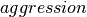 setting on the overall performance. Figure File size and write performance using varying gzip aggression settings shows that the data compression we achieve for the test dataset (using dataset A as donor dataset) are comparable for all 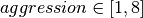 settings (we did not evaluate an aggression setting of 9 as the write performance was very poor). For the data write, we observe that the performance is acceptable for 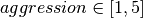 and decreases significantly for 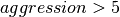.
, assuming that a medium aggression value provides a good balance of compression ratio and speed. [5] The goal of this section is to determine the influence of the 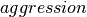 setting on the overall performance. Figure File size and write performance using varying gzip aggression settings shows that the data compression we achieve for the test dataset (using dataset A as donor dataset) are comparable for all 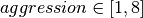 settings (we did not evaluate an aggression setting of 9 as the write performance was very poor). For the data write, we observe that the performance is acceptable for 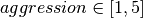 and decreases significantly for 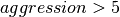.
For the selection test cases, the performance results are consistent with the results from the previous tests. On portal, the performance of the z-slice selection improves significantly when using compression, while the spectra and subcube selection show comparable performance with and without compression (see Figure Selection performance results using varying gzip aggression settings (portal)). For hopper, we again observe a general strong decrease in the selection performance when enabling compression (while, although much slower, the overall selection performance is still acceptable) (see Figures Selection performance results using varying gzip aggression settings (hopper using /project) and Selection performance results using varying gzip aggression settings (hopper using /scratch) [6]).
Overall, we find that for the data layouts tested here, increasing the aggression parameter above 1 does not have a large impact on the compression ratio and selection performance, whereas high aggression values may significantly decrease the data write performance. In the context of MSI data, low aggression values of 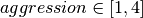 may, therefore, be preferable when using gzip compression.

File size and write performance using varying gzip aggression settings

Selection performance results using varying gzip aggression settings (portal)

Selection performance results using varying gzip aggression settings (hopper using /project)

Selection performance results using varying gzip aggression settings (hopper using /scratch)
Footnotes
| [5] | The parameter is a number between to indicate the tradeoff between speed and compression ratio (0=fastest, 9=best ratio). |
| [6] | Bars shown transparently indicate that the bars exceed the maximum value shown in the plot. The real value for those bars are indicated via additional text labels. |
Local Scalability: Multi-processing¶
Next we tested the local scalability using Python’s multiprocessing capabilities (i.e, on a single hopper login node and portal, and not across multiple compute nodes). We again use a test dataset (using A as donor dataset) and we regenerate the dataset for each experiment (i.e., file layout + system). We repeat each computation 50 times on the same file and report the average times and standard deviations. For this test we select 20,000 z slices (i.e, 20% of the data) and compute the variance of the data values across the slices, i.e.:
- 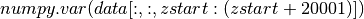 with 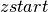 being selected randomly ()
We parallelize the computation across processes by dividing data along the x axis, i.e., each process computes for its portion of the data:
while and are determined based on the process id. The result is then stored in a shared array. The average performance (with error bars indicating the standard deviation) for performing this calculation on hopper using project are shown in Figure Scaling results for computing the variance for 20000 z-slices (hopper using /project). We compute the speed-up by using the time required using 1 process as reference (i.e., the time from the current experiment so that the speed-up using 1 processor is always equal to 1)(see Figure Speed-up results for computing the variance for 20000 z-slices (hopper using /project)). We repeated the same tests also on portal (again using the /project file systems). The results for portal are shown in Figures: i) Scaling results for computing the variance for 20000 z-slices (portal) and ii) Speed-up results for computing the variance for 20000 z-slices (portal).
The main bottleneck in this calculation is again the data selection/load. We observe that we can achieve good speed-up for larger numbers of processes using hopper compared to portal. This behavior is likely due to the better I/O (network) performance of hopper compared to portal. On portal we observe a stable speed-up for up to 5 processes (when using compression) and we achieve a speed-up. Using hopper we observe a linear speed-up for up to 8 processes. Afterwards, we still observe speed-up, however, at a lower and less stable rate. As before, we observe that using compression yields better performance on portal while reducing the performance when using hopper.
In the context of the OpenMSI web-based data viewer we typically need to extract smaller subsets of the data. We, therefore, next repeated the variance computation for 25 consecutive z slices (similar to the z slice selection use-case used in the previous sections). The timings and speed-up results on portal using default setup —i.e., with chunking and gzip compression, aggression=4— are shown in Figure Timings and sppeed-up results for computing the variance for 25 z-slices (portal). We observe that even-though the amount of data retrieved is with 0.5MB comparably small —note the data being loaded to fulfill the query is on the order of 39.0625MB—, we can still achieve good speed-ups until 4-7 processes, afterwards the performance degrades again.
{kind=link}
{kind=link}

Scaling results for computing the variance for 20000 z-slices (portal)

Speed-up results for computing the variance for 20000 z-slices (portal)

Timings and sppeed-up results for computing the variance for 25 z-slices (portal)
Discussion¶
Data Layout¶
Use of chunking has many benefits but choosing the correct chunk size can be complicated. In the context of MSI data, the choice of a good data layout is complicated by: i) the large difference between the size of the spatial / and the (, mass) dimension and ii) the need for regularly performing orthogonal data selection operations (namely selection of spectra [x,y,:] and full slices in z [:,:,z]. Our experiments have shown that a chunking of may work well for most cases, i.e., it provides a good compromise in performance between the different selection operations while maintaining acceptable write performance and limiting the worst-case overhead in file size.
Our experiments have also shown that MSI data lends itself well to compression (we have seen reductions in file size on the order of to on real MSI datasets). We have also seen that the use of data compression (here gzip) may also improve the selection performance by reducing the amount of data that needs to be loaded from disk (see results from portal). This is particularly true for I/O (and or network) bound systems, such as portal. However, we have also seen (on hopper) that the use of compression can also decrease the selection performance due to the time required for decompression (see results hopper). Having direct access to uncompressed data may, hence, be advantageous for any analyses that require a large number of random accesses to the data from a high-performance compute systems (such as hopper) where the time required for decompression is larger than the time saved for data transfer. However, the reduced storage requirements and overall more stable selection performance results suggest that the use of compression may be advantageous.
Based on the results from this study we currently use a data layout of with gzip compression and aggression=4 as default for storing MSI data using the OMSI HDF5 data format.
System Performance¶
In a serial setting we observe that hopper‘s /scratch filesystem generally provides better selective read performance than the /project file system. This is not unexpected and overall the performance of both file systems appears to be sufficient to perform most common MSI analysis tasks. However, based on the test results it appears that on portal: i) the selection performance is highly dependent on system load (which appeared to be high on many occasions) and ii) the selection performance is bound by the performance of the I/O system. Since the performance using /project is significantly higher on hopper login nodes than on portal, it appears that the bandwidth of the network connection of portal to the GPFS /project file system may be too low to ensure a reliably fast operation of web-applications that require repeated access to large datasets. This, however, is essential for production use of science gateways that aim to make advanced data viewing and analysis capabilities accessible to the application community (such as the OpenMSI science gateway for MSI data). While we were able to achieve usable I/O performance on portal through the use of chunking and compression, we have also seen that even from /project we can achieve significantly better performance on hopper when storing the data in a raw, uncompressed form (i.e., we should be able to get much better selective I/O performance on portal using /project). While portal provides a good platform for development of science gateways and web applications, the question remains whether portal is powerful enough —with respect to both compute, I/O and network performance— to provide a reliable, high-performance platform for hosting production science gateways.
Future Work¶
In future we plan to evaluate the performance of the different data layouts in a: i) local parallel (multi-processing) and ii) distribution parallel (MPI) environment.
While gzip is one of the most widely available compression algorithms in HDF5 it is not necessarily one with the best performance. In future we plan to evaluate the use of other compression algorithms —such as, szip [7], LZF [8], HDF5 N-Bit Filter [9] , HDF5 Scale+Offset Filter [10] etc.— to further improve the overall read performance and to reduce the larger overheads for compression we have seen on hopper. In addition to compression, HDF5 also provides a shuffle filter [11] which can potentially further improve the effectiveness of data compression [12] .
Footnotes
| [7] | http://www.hdfgroup.org/doc_resource/SZIP/ |
| [8] | http://h5py.alfven.org/lzf/ |
| [9] | http://www.hdfgroup.org/HDF5/doc/RM/RM_H5P.html#Property-SetNbit |
| [10] | http://www.hdfgroup.org/HDF5/doc/RM/RM_H5P.html#Property-SetScaleoffset |
| [11] | http://www.hdfgroup.org/HDF5/doc/RM/RM_H5Z.html |
| [12] | http://www.hdfgroup.org/HDF5/doc_resource/H5Shuffle_Perf.pdf , |